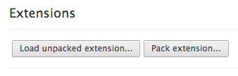

Upload an icon and specify the name, description, and url for the website you want to make an "appmark" to.
Download the generated .zip file (default is download.zip) and extract it to a new folder.
In Chrome Settings, go to Tools » Extensions or navigate to chrome://extensions. In the top right, toggle Developer Mode to turn it on.
Click the newly revealed Load Unpacked Extension button (shown below) and select the folder you unzipped download.zip to.
Voila. Check your New Tab page for the Appmark.